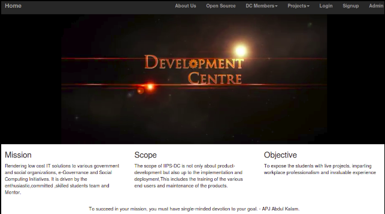
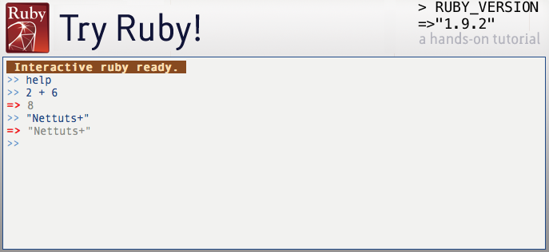

The D.C. Management Information System of IIPS is a web application to speed up the process of managing development centre in this educational institute.The main objective of this project is to provide the solution for a non-profitable organization which provides a base to carry out academic experiments, to introduce new trends and technologies and involves a good practice to groom their students as an IT professionals in all aspects.
Read More
Ruby is a dynamic, reflective, object-oriented, general-purpose programming language. It was designed and developed in the mid-1990s by Yukihiro "Matz" Matsumoto in Japan.It supports multiple programming paradigms, including functional and imperative. It also has a dynamic type system and automatic memory management.
2. Ruby features a true mark-and-sweep garbage collector for all Ruby objects. No need to maintain reference counts in extension libraries. As Matz says, “This is better for your health.”
3. Ruby is said to follow the principle of least astonishment (POLA), meaning that the language should behave in such a way as to minimize confusion for experienced users.
4. Ruby is also suitable for larger software systems. Its most successful application is in the Ruby on Rails web framework, software which has five major subsystems, numerous minor pieces and a plethora of support scripts, database backends and libraries.5. It is also a proper scripting language, meaning it can be embedded in other programs and be used to control them. A perfect example of this is Google Sketchup, Ruby is used as a plugin interface to programmatically control both the program and the 3D models drawn by the program.
$ irb
irb(main):001:0> puts "Hello, World"
Hello, World
=> nil
irb(main):002:0> 1+2
=> 3
Ruby is ranked among the top 10 on most of the indices that measure the growth and popularity of programming languages worldwide (such as the TIOBE index). Much of the growth is attributed to the popularity of software written in Ruby, particularly the Ruby on Rails web framework.
Read More